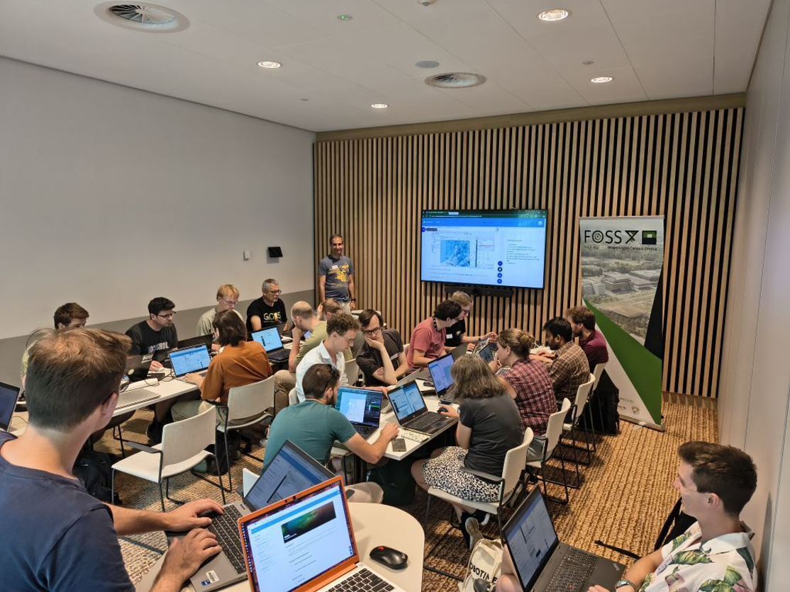
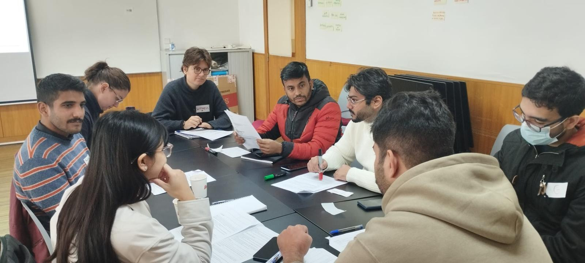
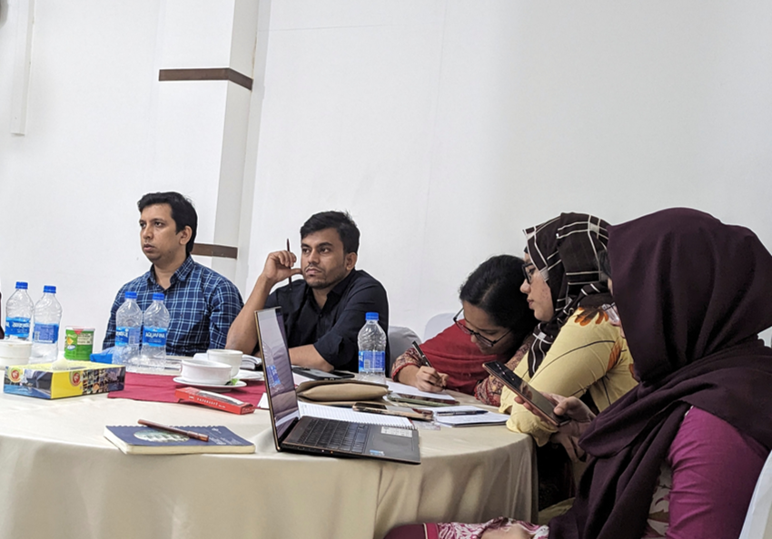

Master’s thesis · Saxony, Germany
Groundwater availability under climate change
Assessing regional variations and climate impacts on groundwater availability in Saxony.
Connecting groundwater, satellite observations and environmental modelling to support a more climate-resilient future.
Discover my work ↓ Research, in conversation.
Research, in conversation.Geospatial Hydrologist
I study how water systems respond to climate and land-use change, from groundwater availability to coastal flood risk.
My work brings together GIS, remote sensing, Python and hydrological modelling to support sustainable water management and climate adaptation.
Research and project work spanning groundwater systems, coastal flood risk and environmental change in Europe and Bangladesh.
Assessing regional variations and climate impacts on groundwater availability in Saxony.
Integrated LiDAR-derived terrain, RTK surveys and soil-strength results for embankment vulnerability mapping. Developed Sentinel-1/2 inundation models and VAE-based flood forecasts with Integrated Gradients for explainability.
Prediction of land-use and land-cover changes and urban growth using the CA-Markov model and geospatial techniques.
Read the publication ↗Investigated groundwater abstraction impacts using GMS in Sacramento Valley. Designed a combined urban pluvial flood and erosion risk framework using remote sensing and SWMM in Saxony.
Select a research image to view it full-size.
Processed LiDAR point clouds and generated terrain models. Applied Python workflows for environmental mapping and image classification, and conducted geomorphological studies.
Conducted coastal vulnerability analysis, drone image processing, flood modelling, field data collection and stakeholder engagement through SURF-IT at North South University, Bangladesh.
Processed satellite imagery, classified land cover, monitored cropping patterns and assessed environmental conditions.
Analysed spatial and satellite data, produced GIS maps, digitised land-use features and managed spatial datasets with quality checks.
ArcGIS Pro, ArcGIS Online, QGIS, Google Earth Engine, ERDAS IMAGINE.
Python: NumPy, Pandas, GeoPandas, Rasterio, Matplotlib, Scikit-learn, TensorFlow/Keras. R, SPSS.
Random Forest, XGBoost, SVR, Gaussian Process Regression, Variational Autoencoders.
Point cloud processing, CloudCompare, DEM generation, RTK integration.
SQL, FME, geodatabase management.
SWMM, GMS, CAD.
Hossein, Md Kausar, et al. · Arabian Journal of Geosciences, 16, 468.
Ferdausi, Marufa, et al. · International Journal of Sustainable Development & World Ecology, 33(1), 68–80.
Hossein et al. · Submitted to Applied Water Science.
Ahmed, S., et al., including Hossein, M. K. · Submitted to Weather and Climate Extremes.
FOSS4GNL · Wageningen University & Research · 3 July 2025.
Hossein, Md Kausar, et al. · International Conference on Environmental Protection for Sustainable Development · University of Dhaka · 2–4 September 2022.
Instituto Superior Técnico · IHE Delft · Technische Universität Dresden.
Mawlana Bhashani Science and Technology University · CGPA 3.67/4.00. Thesis on land-use change prediction and carbon storage in Dhaka.
Mawlana Bhashani Science and Technology University · CGPA 3.83/4.00. Thesis on land-use change and urban heat island intensity.
Erasmus Mundus Scholarship (2026) · National Science and Technology Fellowship (2021).
Groundwater–surface water interactions · Climate and land-use impacts · Mountain hydrology · AI-driven modelling · Drought resilience · Nature-based solutions · Compound flood–drought events.
Specialist training in geospatial analysis, hydrological applications and mapping.
Udemy · Instructor: Hans van der Kwast · 1.5 hours
View certificate ↗: Course certificate: Point Cloud Processing and 3D Visualization with QGIS — Md. Kausar Hossein (opens in a new tab)IHE Delft Institute for Water Education · 40 hours
View certificate ↗: Course certificate: QGIS for Hydrological Applications — Md. Kausar Hossein (opens in a new tab)Research Society · Online course
View certificate ↗: Course certificate: GIS and Remote Sensing — Md. Kausar Hossein (opens in a new tab)Esri · 1 hour 15 minutes
View certificate ↗: Course certificate: Getting Started with Mapping and Visualization — Md. Kausar Hossein (opens in a new tab)Esri · 1 hour
View certificate ↗: Course certificate: GeoPlanner for ArcGIS: Exploring the Green Infrastructure in Your Study Area — Md. Kausar Hossein (opens in a new tab)Esri · 4 hours 45 minutes
View certificate ↗: Teaching with GIS: Introduction to Using GIS in the Classroom (PDF, opens in a new tab)Esri · 3 hours 30 minutes
View certificate ↗: Course certificate: Getting Started with GIS — Md. Kausar Hossein (opens in a new tab)SuperMap · Mini Classroom Course
View certificate ↗: Course certificate: SuperMap GIS 4-Day Mapping — Md. Kausar Hossein (opens in a new tab)Practical learning and collaborative discussion at the intersection of geospatial science, climate adaptation and early warning.

01Working with point clouds and mesh datasets, I explored how QGIS can turn complex spatial information into interpretable visualisations. Hands-on exercises used hourly precipitation data to animate changes across an area over the course of a day, alongside visualisation of wind patterns. The workshop connected spatial data processing with time-enabled mapping, making environmental patterns easier to explore and communicate.

02Through role-play, debate and group discussion, I explored how climate change affects agriculture, livelihoods and socioeconomic development. Participants considered the perspectives of farmers, communities and public authorities, discussing how people respond to climate risks and how policy choices shape local and regional outcomes. The exercise brought the trade-offs of climate adaptation into focus, showing how decisions made at one level can influence people and resources at another.

03This workshop explored how artificial intelligence and machine learning can support flood forecasting and the assessment of climate-related extreme events. Discussions connected predictive modelling with practical early warning: how to communicate timely information so communities can prepare, protect livelihoods and reduce potential losses. I examined the role of data-driven tools in linking scientific forecasts with decisions before an event unfolds.
For research collaboration in geospatial hydrology, remote sensing and climate adaptation.
Dresden, Germany